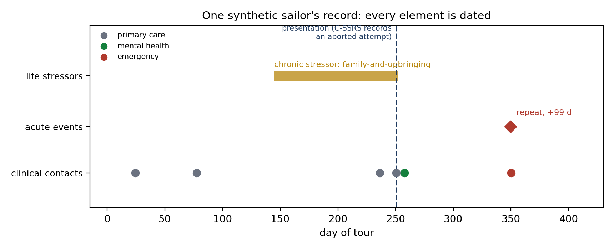
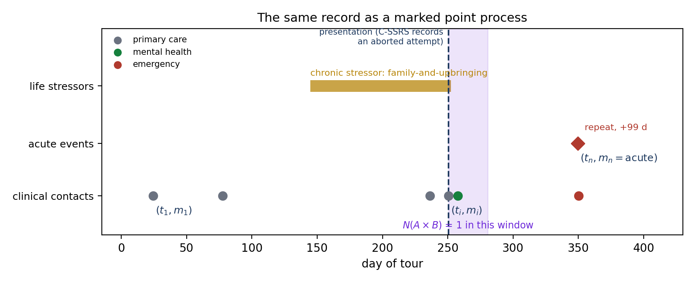
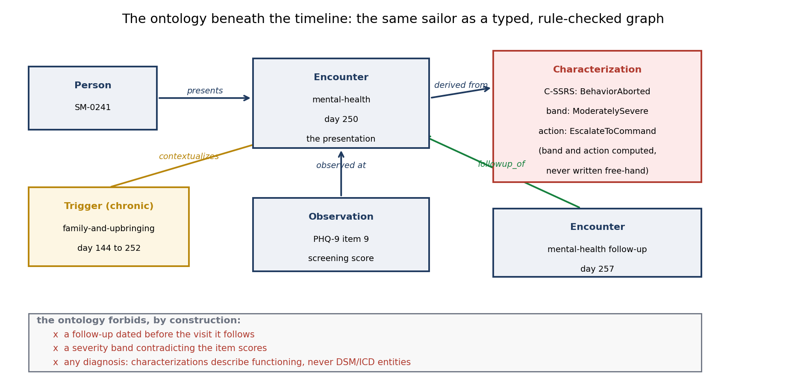
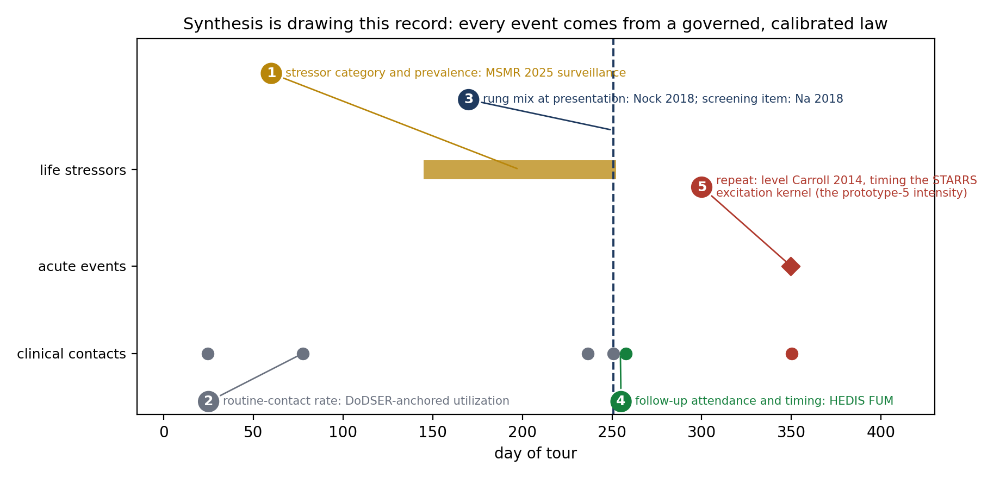
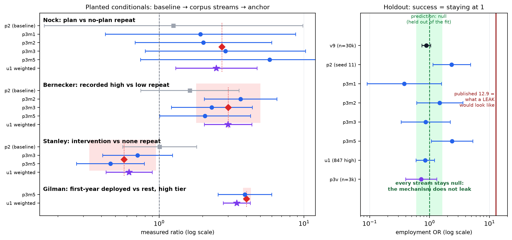
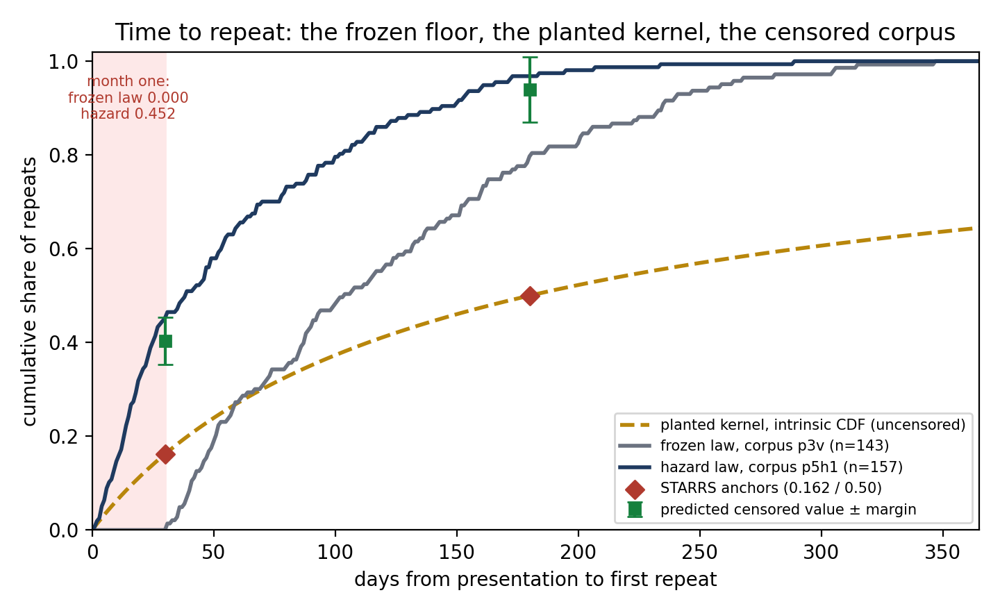
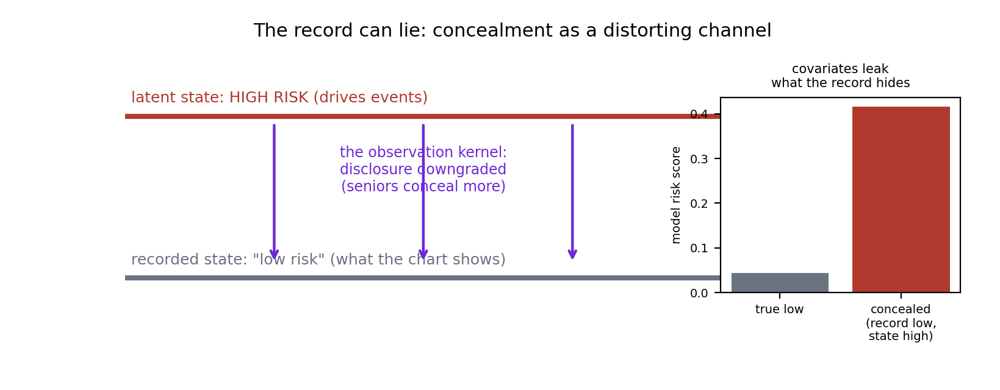
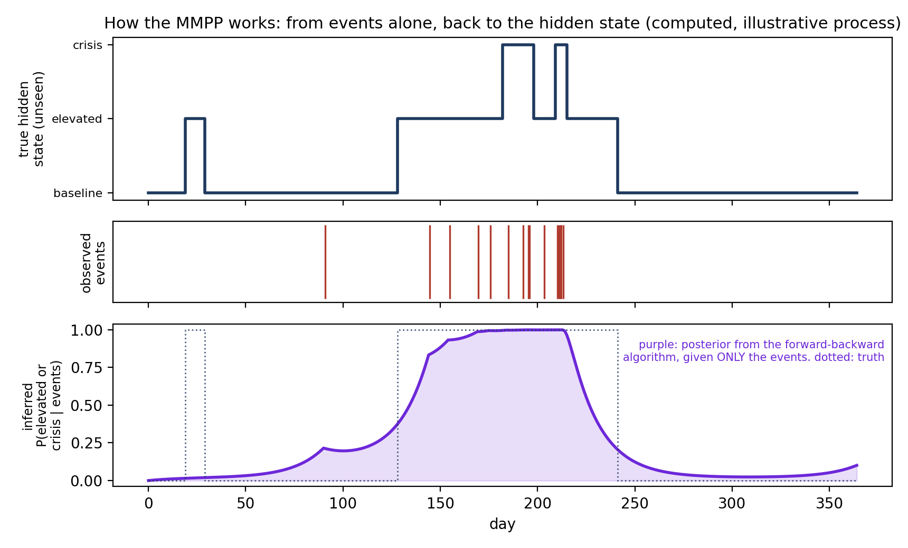
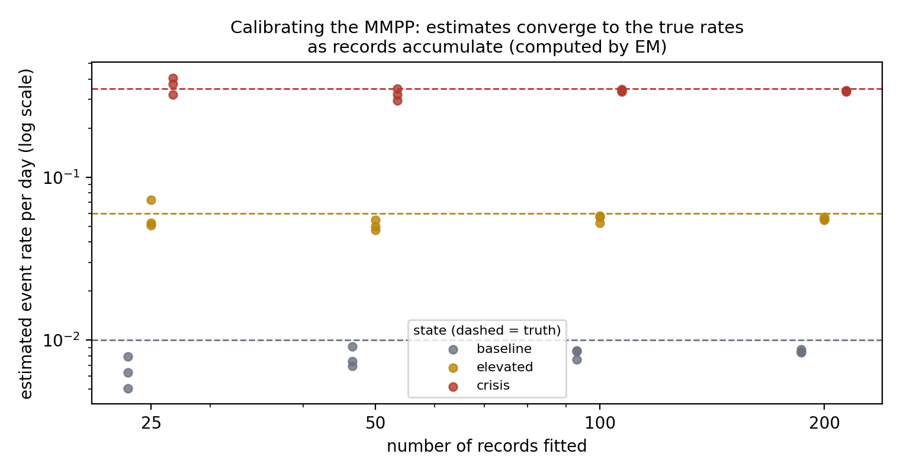
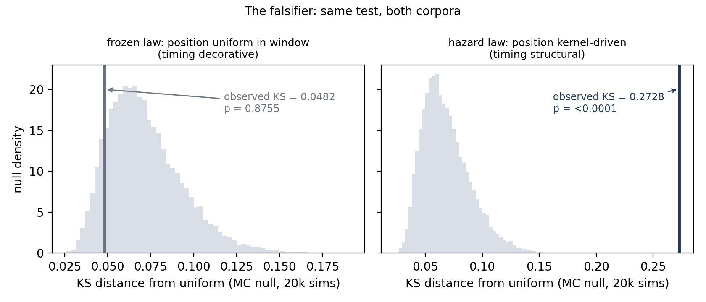

Records, Laws, and Hidden States
The marked-point-process foundation of PRISM’s synthetic data,
and where the risk model comes from
September 4, 2026
One sailor, one record
Start concrete: a single generated record

This is one synthetic sailor from the current corpus. A chronic family stressor builds for three and a half months. Routine care ticks along. At day 250 the sailor presents, and the C-SSRS records an aborted attempt. A mental-health follow-up happens. Ninety-nine days later, a second acute event, and an emergency contact. Every element is dated, typed, and validated. No real sailor appears here; that is the point, and it is what makes everything on the following slides possible.
That record is a marked point process
The formalism, one definition

A marked point process: a set of timestamped events, each carrying a mark saying what kind of thing it is. The record from the previous slide is redrawn here in exactly that language. Every dot is an event at a time t with a mark m naming its type, colored by kind: primary care, mental health, emergency. The first contact is the pair (t1, m1), a later one is (ti, mi), and the acute presentation is (tn, mn = acute). The chronic stressor is the same idea over an interval rather than an instant. That is the whole definition, and the record already is one.
Statistics about it are counting functionals. N(A × B) counts the events whose time falls in a window A and whose mark is in a set B. The shaded window above is one such count: N(A × B) = 1, a single event in the 30 days after the presentation. Prevalences, rates per person-year, odds ratios, and lag quantiles are all functions of these counts. Anything the record dates can be counted.
Why this formalism: the studies speak it
The same mathematical object on both sides
A counting functional is just a recipe: count the events in a chosen time window and mark set, then combine the counts. Published military studies already report their findings this way. A prevalence is a count of members with a mark over the total; an odds ratio is a ratio of such counts, exposed versus not; a rate per 100,000 person-years is an event count divided by person-time; a share within 30 days is a count inside a window over the total. Every one is N(A × B), or a ratio of them, the object from the last slide.
Choosing the MPP representation makes the corpus statistic and the published statistic the same mathematical object. Calibration becomes a solve-then-measure loop: declare the published target, solve the generator parameters, generate, measure from the re-parsed records, compare.
No bespoke bridge per source. Ten sources are planted this way today.
What is an ontology?
The type system underneath the timeline

An ontology defines the kinds of entities a record may contain, the relations among them, and the rules that follow. Underneath the opening timeline sits exactly that: the same sailor as a typed, rule-checked graph, where the severity band and the recommended action are computed from the items and the rung, never written free-hand. The box lists what the ontology forbids by construction, including any diagnosis at all: characterizations describe functioning, never DSM or ICD.
The synthetic approach in one loop
Ontology bounds it, sampler draws it, reasoner completes it
The ontology defines what a scenario may say and which inferences follow. A sampler draws only the free choices. A reasoner completes everything the pattern entails, and validation is an always-pass contract: zero rejections across every corpus, so the corpus distribution is exactly the sampler’s law with no hidden conditioning.
Where the loop shows the vocabulary cannot express something needed, the ontology grows additively, which is why it sits inside the loop rather than beside it.

How the MPP is used in synthesis: drawing a realization
Generation is placing governed events in time

Synthesizing a scenario means drawing one realization of the marked point process, event by event, and every draw is governed by a calibrated law, numbered on the record. The parameters are not typed in from the papers; they are solved so the corpus functionals land on the published values, then measured back from the generated records. Unsourced values are declared, labeled assumptions in a register, not silent guesses.
Proof it works: recover the studies, and the trap stays empty
Solve, measure, and try to fail

Every planted mechanism moved from its independence baseline onto its published anchor, measured from the generated records. One published association is deliberately left out of the calibration as a trap: the system is required to find nothing there. It does: 0.879 with interval 0.74 to 1.04 against a published 12.9, and the null has held at every scale since.
Timing became real
From dates on events to a law of events

Until recently, repeat crises were placed uniformly in the record window, and the first month after a crisis was structurally empty. The published evidence says the opposite: risk peaks immediately and decays slowly, with about one in six repeat events inside the first month and half within six months. Prototype 5 rebuilt the repeat process as a conditional intensity calibrated to that shape. The first month now carries 45 percent of repeats, and a statistical test, itself validated first, proves the timing is structural (p < 0.0001).
The record can lie: the hidden layer
Latent state versus what the chart shows

Sailors conceal. The system models a latent risk state that drives events, observed through a distorting channel: disclosures downgraded, more so for seniors, so a record can read low while the state is high. The rates are anchored to Army research on ideation denial, and a DoD probability survey of 14,000 service members confirms the seniority direction. The leak is measurable: a model reading only the surrounding circumstances, never the clean record, scores concealed members at 0.416 against 0.043 for truly low-risk members.
A hidden state driving the event rates: the MMPP
The model is a small, fittable version of the world we built
A Markov-modulated point process: an unobserved state moves among a few levels, and the event rate depends on the state. Quiet at baseline, thicker when elevated, bursts in crisis.
The mapping to PRISM is exact:
- hidden state: the C-SSRS ladder, which the ontology already declares unassertable from records
- transitions: the ontology’s reified state transitions
- event intensities: state-dependent, the prototype-5 machinery generalized
- concealment: the emission channel between state and record
Fits at small sample sizes, carries corpus-derived priors, and outputs risk over time rather than a single score.

Computed, not drawn: from the events alone, the forward-backward algorithm recovers the hidden elevated period.
How the hidden-state model is calibrated
Priors from the corpus, parameters from the records, truth recoverable

Calibration runs in two stages. First, the synthetic corpus hands the model its starting point: the calibrated generator supplies prior values for the state-dependent event rates and the transitions, because the corpus law and the model share the same objects. Second, the parameters are fitted to records by likelihood (the EM algorithm) and update as records accumulate: the figure is that process run for real, sailors simulated from known rates, fitted blind, with the estimates converging onto the truth as the record count grows from 25 to 200.
The exam no one else can give
Hidden states are unverifiable, except here
On real data, a hidden state can never be checked: nobody knows the truth. Our corpus knows every member’s true latent state, including exactly who concealed.
So the model can be graded on the thing that matters: does its inferred state match the planted truth, including for the sailors whose records lie? No real dataset can administer this exam. Ours can, with margins declared before the run.
Where the MMPP sits: one rung of a measured ladder
The architecture is a measurement result, not a preference
The Markov-modulated point process is the recommended candidate:
- Shaped like the problem: risk is a latent state seen through an imperfect record, and only the MMPP models that blind spot.
- Answers leadership’s question: risk over time, aggregable to the unit, not a one-time score.
- Works at Navy data sizes: tens of parameters, an exact likelihood, corpus priors, and principled small-data updates.
- Accountable: states are the C-SSRS ladder, every parameter maps to a published quantity, same non-diagnostic gates.
Falsifiable: every candidate takes the exam at right, where the true states are known. Lose it, lose the recommendation.
Backup slides
Backup: MMPP mechanics for the statistician
The generator matrix and the likelihood
Hidden state S(t): a continuous-time Markov chain with generator Q, transition rates covariate-modulated (the calibrated mechanisms enter here). Events of type k arrive at rate lambda_k(S). The likelihood over a record is a product of matrix exponentials interleaved with mark-intensity matrices: exact, cheap at 3 to 5 states, no simulation needed to fit.
Dwell times are phase-type, which approximate any positive distribution, including the heavy-tailed kernel prototype 5 planted, so the family can represent the law we generate from.
Backup: the falsifier, in full
Proof the timing is structural

The same uniformity test on both corpora, its power proven first (false-positive rate 4.9 percent at nominal 5; power 1.00 on kernel draws): the frozen law sits inside its null (KS 0.048, p 0.876), the hazard law far outside it (KS 0.273, p < 0.0001).
la3d.github.io/WGRA